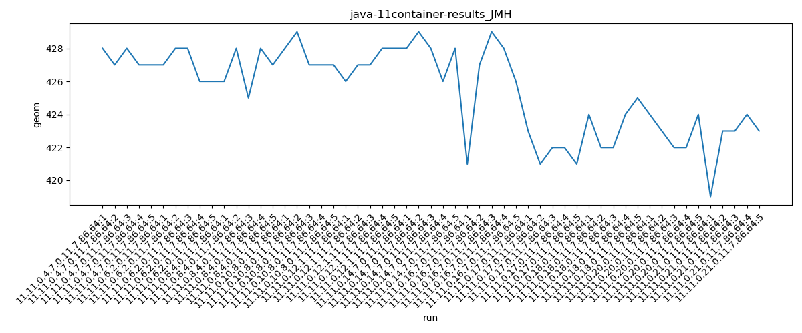
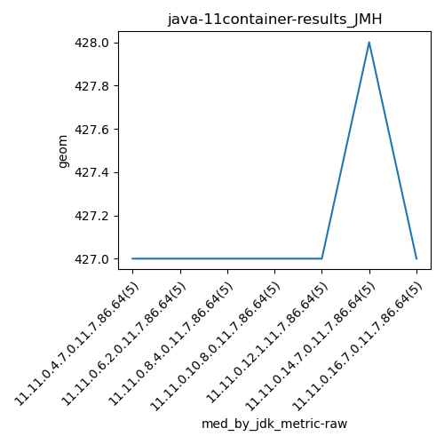
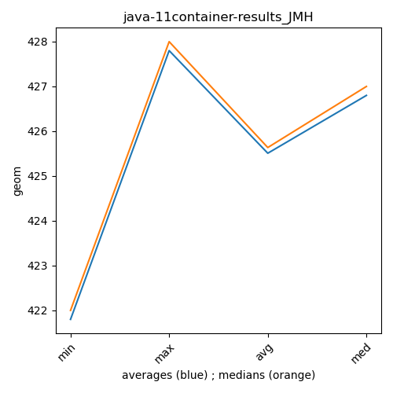

java-11 JMH
Context at bottom
/home/jvanek/git/benchmarks-in-nested-virtualisation-toolchain/final_results/container_results/container-results_J2DBENCH
java-11
JMH
/home/jvanek/git/benchmarks-in-nested-virtualisation-toolchain/final_results/container_results/container-results_RADARGUNs3
java-11
JMH
/home/jvanek/git/benchmarks-in-nested-virtualisation-toolchain/final_results/container_results/container-results_RADARGUNs1
java-11
JMH
/home/jvanek/git/benchmarks-in-nested-virtualisation-toolchain/final_results/container_results/container-results_DACAPO
java-11
JMH
/home/jvanek/git/benchmarks-in-nested-virtualisation-toolchain/final_results/container_results/container-results_SPECJBB
java-11
JMH
/home/jvanek/git/benchmarks-in-nested-virtualisation-toolchain/final_results/container_results/container-results_JMH
java-11
JMH
container-results_JMH
final score
Expected number of java-11 JDKs: 11
1st avgmed_alljdks_metric:
/home/jvanek/git/benchmarks-in-nested-virtualisation-toolchain/final_results/result_processing.py /home/jvanek/git/benchmarks-in-nested-virtualisation-toolchain/final_results/container_results/container-results_JMH geom False
values: [428, 427, 428, 427, 427, 427, 428, 428, 426, 426, 426, 428, 425, 428, 427, 428, 429, 427, 427, 427, 426, 427, 427, 428, 428, 428, 429, 428, 426, 428, 421, 427, 429, 428, 426, 423, 421, 422, 422, 421, 424, 422, 422, 424, 425, 424, 423, 422, 422, 424, 419, 423, 423, 424, 423]

Expected number of iterations: 5
final number of values: 55 out of 55
Pass rate: 100.0%
values: (419, 429, 425.5090909090909, 426)

** accuracy from all jdks and runs
more is better
MIN: 419
MAX: 429
AVG: 425.5090909090909
MED: 426
Relative differences 1:
MIN-MAX: 2.0 %
MIN-AVG: 2.0 %
MIN-MED: 2.0 %
MAX-MIN: -2.0 %
MAX-AVG: -1.0 %
MAX-MED: -1.0 %
AVG-MED: 0.0 %
stored to java-11.properties. sort | uniq that!
2nd avgmed_by_jdk_metric:
values: [427.4, 427.0, 426.8, 427.6, 427.2, 427.8, 426.2, 421.8, 423.4, 423.0, 422.4]

values: [427, 427, 427, 427, 427, 428, 427, 422, 424, 423, 423]

values: (421.8, 427.8, 425.50909090909096, 426.8)
values: (422, 428, 425.6363636363636, 427)

** accuracy from all jdks where runs were avged
more is better
MIN: 421.8
MAX: 427.8
AVG: 425.50909090909096
MED: 426.8
Relative differences 1:
MIN-MAX: 1.0 %
MIN-AVG: 1.0 %
MIN-MED: 1.0 %
MAX-MIN: -1.0 %
MAX-AVG: -1.0 %
MAX-MED: -0.0 %
AVG-MED: 0.0 %
stored to java-11.properties. sort | uniq that!
** accuracy from all jdks where runs were medianed
more is better
MIN: 422
MAX: 428
AVG: 425.6363636363636
MED: 427
Relative differences 1:
MIN-MAX: 1.0 %
MIN-AVG: 1.0 %
MIN-MED: 1.0 %
MAX-MIN: -1.0 %
MAX-AVG: -1.0 %
MAX-MED: -0.0 %
AVG-MED: 0.0 %
stored to java-11.properties. sort | uniq that!
pass rates:
container-results_JMH=100.0%
Context:
- container_results
- JMH